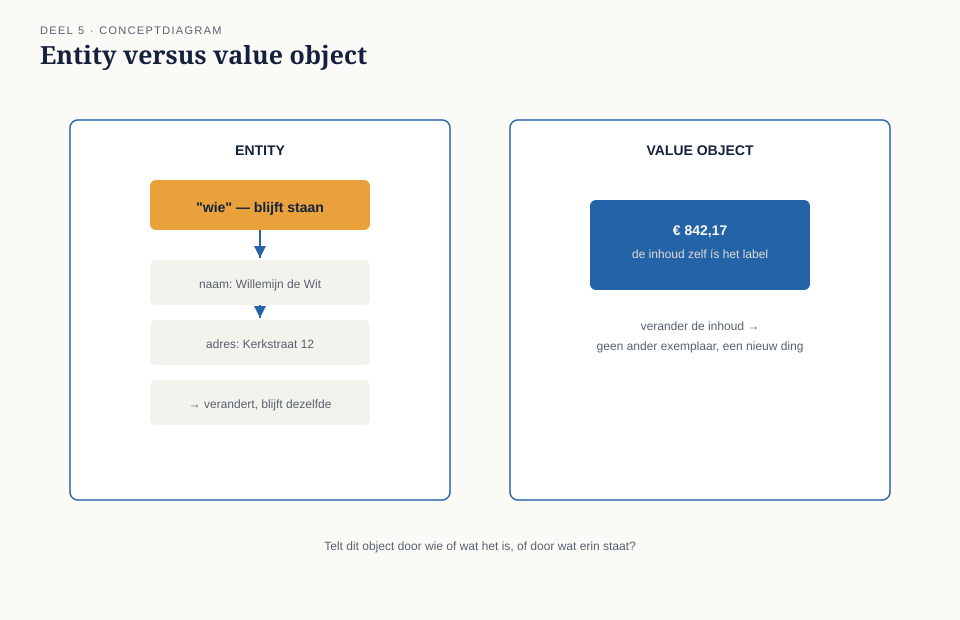
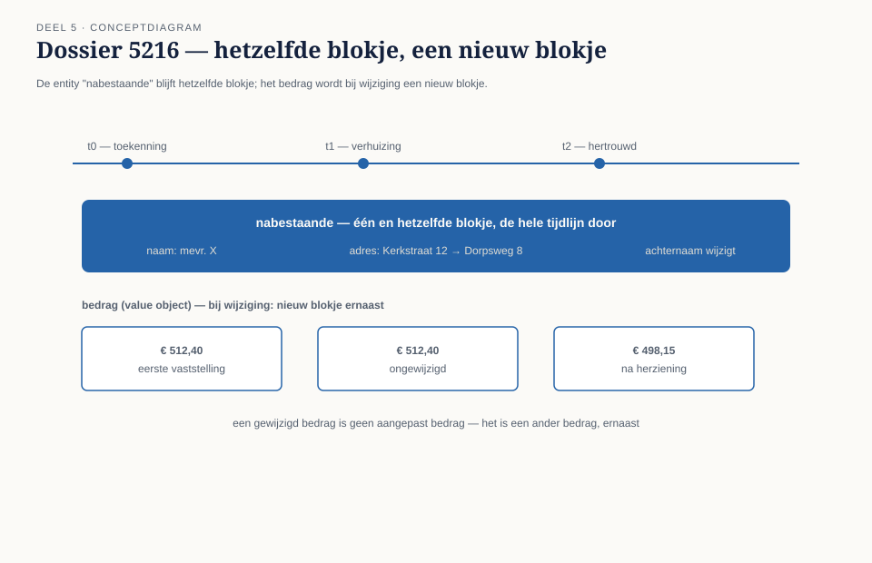
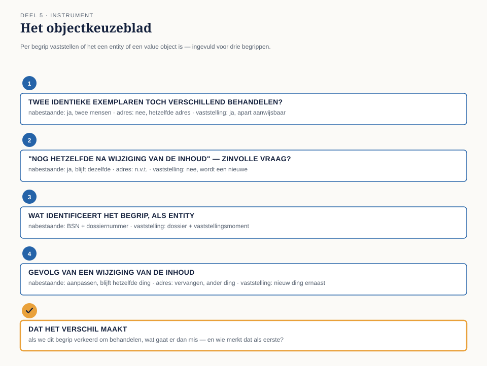

Cursus Domain-Driven Design · Niveau 1 (fundament) · Deel 5 van 30
Identiteit versus waarde
Is dit dossier hetzelfde dossier als gisteren, of een nieuw dossier met dezelfde inhoud? Willemijns adreswijziging en Daans herberekende partnervaststelling blijken twee fundamenteel verschillende soorten verandering te zijn. Dit deel leert het team het onderscheid tussen entity's — die tellen door wie ze zijn — en value objects — die tellen door wat erin staat.
7secties
±1uleestijd + opdrachten
5controlevragen
4vragen objectkeuzeblad
Positionering. Deze cursus bereidt voor op de iSAQB® Advanced Level-module Domain-Driven Design en is uitdrukkelijk geen vervanging van een erkende iSAQB-training — zij levert op zichzelf geen certificaat op. Alle formuleringen, figuren en werkvormen zijn van Ductus; waar wij naar begrippen van Eric Evans en Vaughn Vernon verwijzen, doen wij dat in eigen woorden en eigen voorbeelden. Studeer voor de module altijd óók bij een erkende provider.
Niveau 1: ➊ Wat DDD is → ➋ Ubiquitous language → ➌ Domain/subdomain → ➍ Model vs. implementatie → ➎ Entity/value object (hier) → ➏ Aggregate → ➐ Domain event → ➑ Services/factory/repository → ➒ Bounded context → ➓ Examentraining + capstone
01
Waar dit deel over gaat
⏱ 5 min
Deel 4 eindigde met een model dat weer de taal van Willemijn spreekt, en met een vraag die Tijmen bewust liet openstaan: is dit dossier hetzelfde dossier als gisteren, of een nieuw dossier met dezelfde inhoud? Die vraag klinkt bijna filosofisch, maar ze is voor het Nabestaandenloket keihard praktisch. Het antwoord bepaalt of het team objecten moet bouwen die je door de tijd heen kunt volgen, of objecten die alleen tellen door wat erin staat.
Aan het eind van dit deel kun je:
in eigen woorden uitleggen wat een entity en een value object zijn, en waarin ze fundamenteel verschillen;
bij een gegeven begrip uit het Nabestaandenloket beargumenteren of het om identiteit of om waarde gaat;
benoemen wat er misgaat als je een entity als value object behandelt, en omgekeerd;
met het objectkeuzeblad een verzameling begrippen indelen in entity's en value objects, met een onderbouwing die standhoudt bij doorvragen.
02
De casus: het adres dat niet meer hetzelfde adres is
⏱ 11 min
Willemijn brengt dossier 5216 mee: een weduwe die twee jaar geleden is verhuisd, kort na de toekenning van haar partnerpensioen. "Ik moest toen haar adres aanpassen," zegt ze. "Gewoon het huisnummer en de postcode overschrijven. Niemand vroeg zich af of dat nog steeds dezelfde mevrouw was. Natuurlijk was ze dat."
Dan pakt ze dossier 5217: ook een adreswijziging, maar deze keer is de nabestaande opnieuw getrouwd en heeft ze een nieuwe achternaam. "Ook toen heb ik het dossier niet vervangen. Ik heb het aangepast. Zij is dezelfde persoon die recht heeft op de uitkering, ook al is haar naam anders."
Daan trekt de vergelijking door naar de partnervaststelling zelf: "Als Beleid en Actuariaat een rekenregel wijzigt en we herberekenen het bijzonder partnerpensioen van dossier 5216, is dat dan nog dezelfde partnervaststelling met een nieuw bedrag? Of wordt het een nieuwe vaststelling?"
Rutger fronst. "Dat voelt anders dan het adres. Bij het adres was er nooit twijfel — er is er maar één, en die verandert gewoon. Bij een vaststelling… als het bedrag verandert, is de vaststelling zelf toch niet meer hetzelfde? Het is een ander besluit, met een andere uitkomst."
Saïda: "Als er ooit een bezwaar komt tegen een oud bedrag, moet ik kunnen aanwijzen: dit was de vaststelling van destijds, met dít bedrag, op díe datum. Als jullie het bedrag straks gewoon overschrijven zoals bij het adres, ben ik dat bewijs kwijt."
Tijmen formuleert de vraag die het hart van dit deel wordt: "Er zitten in dit dossier dus twee soorten dingen. Dingen waarvan het niet uitmaakt wát erin staat, zolang we maar weten wíe of wát het is. En dingen waarbij een gewijzigde inhoud betekent dat het een ander ding is geworden. Wat is wat, hier?"
03
Wat identiteit en waarde zijn
⏱ 16 min
Domain-Driven Design onderscheidt twee soorten objecten in een domeinmodel, op basis van één vraag: telt dit object door wie of wat het is, of door wat erin staat?
Een entity is een object met een eigen, blijvende identiteit, die losstaat van de waarden die het op enig moment bevat. Twee entity's met precies dezelfde gegevens zijn nog steeds twee verschillende dingen als ze een andere identiteit hebben. Andersom: één entity blijft hetzelfde ding, ook als al zijn gegevens in de loop van de tijd veranderen. De weduwe uit dossier 5216 is, ook na haar naamswijziging, dezelfde nabestaande.
Een value object is een object dat volledig wordt bepaald door zijn waarden, zonder eigen identiteit. Twee value objects met dezelfde inhoud zíjn, voor het domein, hetzelfde. Verander je de inhoud, dan heb je geen ander exemplaar van hetzelfde ding, maar een nieuw value object. Een bedrag van € 842,17 is een value object: er bestaat geen zinvolle vraag "is dit hetzelfde bedrag als het bedrag dat ik gisteren zag", alleen de vraag "is dit bedrag gelijk aan dat bedrag".

Figuur 5-1 — een entity: identiteit blijft, inhoud verandert. Een value object: de inhoud is het label
De test die het onderscheid scherp maakt
Stel je voor dat je twee objecten hebt met exact dezelfde gegevens. Zijn dat dan twee verschillende dingen, of is dat gewoon hetzelfde ding, twee keer opgeschreven? Twee nabestaanden met toevallig dezelfde naam en adres zijn nog steeds twee verschillende mensen — dus een entity. Twee bedragen van € 842,17 zijn hetzelfde bedrag — dus een value object.
Een tweede test: kun je een zinvolle vraag stellen als "is dit nog hetzelfde exemplaar als gisteren, ook al is de inhoud gewijzigd"? Bij een entity is die vraag zinvol. Bij een value object is de vraag zelf ongeldig: verander je de inhoud, dan heb je een ander value object, punt.
Controlevragen
Uit Werkboek deel 5, Opdracht 1 — entity of value object?
1De nabestaande zelf (mevrouw De Waard-Kuipers) — entity of value object?Toon antwoord
Entity. Zij blijft dezelfde persoon door naams- en adreswijzigingen heen, zoals dossier 5217 laat zien.
2De maandelijkse uitkering van € 842,17 — entity of value object?Toon antwoord
Value object. € 842,17 is € 842,17, waar het ook vandaan komt; er is geen zinvol “welk exemplaar van dit bedrag bedoel je”.
04
Meer dan een etiket — en de id-valkuil
⏱ 16 min
Het onderscheid lijkt op het eerste gezicht een kwestie van naamgeving, maar het bepaalt drie dingen die het team bij de bouw direct raken.
Gelijkheid. Bij een entity vergelijk je op identiteit. Bij een value object vergelijk je op inhoud. Verwissel je dat, dan ontstaan fouten die moeilijk te doorgronden zijn.
Verandering. Een entity kán veranderen en blijft zichzelf. Een value object verandert per definitie niet: zodra de inhoud anders wordt, is het een nieuw, ander value object.
Herkenbaarheid over tijd. Alleen een entity heeft iets nodig om herkend te worden: een dossiernummer, een BSN. Een value object heeft dat niet nodig — de inhoud zelf is voldoende.

Figuur 5-2 — de entity blijft hetzelfde blokje; het bedrag wordt bij wijziging een nieuw blokje
De valkuil van "het heeft een tabel dus het is een entity"
Een veelgemaakte fout — Daan trapt er in deze sessie zelf ook eerst in — is denken dat alles wat in de polisadministratie een eigen rij met een eigen id heeft, dus wel een entity zal zijn. Dat is een technische aanwijzing, geen domeinredenering. Een database geeft vaak aan alles een primaire sleutel, inclusief dingen die in het domein helemaal geen eigen identiteit hebben — een adres, een bedrag, een periode. Dit is dezelfde valkuil als in deel 4: het terrein dat zich voordoet als de kaart.
Omgekeerd geldt ook een valkuil: iets wegzetten als "gewoon een tekstveld" omdat het geen eigen tabel heeft, terwijl het in het domein wél degelijk identiteit draagt. Een BSN ziet er in de polisadministratie uit als een simpel tekstveld — maar identificeert een deelnemer op een manier die het hele proces daarop laat steunen.
Controlevraag
Uit Werkboek deel 5, Opdracht 3 — weerleg dossierstuk 5-C
1Rutgers eerdere aanname: “alles met een eigen id in de database is een entity.” Waarom klopt dat niet — geef een tegenvoorbeeld in beide richtingen.Toon antwoord
Een primaire sleutel is een technische noodzaak, geen domeinuitspraak. Het adres heeft in de polisadministratie waarschijnlijk een eigen id-kolom, puur omdat de database het moet kunnen opslaan — terwijl het adres in het domein een value object is: geen zinvolle identiteit los van straat, huisnummer en postcode. Omgekeerd heeft het BSN mogelijk géén eigen id-kolom (gewoon een tekstveld), en is het toch, in het domein, het krachtigste identificerende kenmerk dat er is. Techniek en domein volgen hier tegengestelde patronen.
05
De werkvorm: het objectkeuzeblad
⏱ 16 min
Het instrument van dit deel is het objectkeuzeblad: een sjabloon waarmee je, voor een lijst begrippen, systematisch vaststelt of elk begrip een entity of een value object is — en waarom.
Vraag
Waar het op let
Twee identieke exemplaren tóch verschillend behandelen?
Zo ja: kandidaat-entity. Zo nee, en de gegevens bepalen alles: kandidaat-value object.
Zinvolle vraag “nog hetzelfde na wijziging”?
Bij een entity zinvol en vaak "ja". Bij een value object niet van toepassing.
Wat identificeert dit begrip, als entity?
Een dossiernummer, een BSN — kun je niets aanwijzen, wees achterdochtig.
Wat gebeurt er bij wijziging van de inhoud?
"Hetzelfde ding, nieuwe waarde" (entity) of "een ander ding" (value object)?

Figuur 5-3 — het objectkeuzeblad, ingevuld voor drie begrippen uit dossier 5216 en 5217
Controlevraag
Uit Werkboek deel 5, Opdracht 4 — objectkeuzeblad voor het franchisebedrag
1Het franchisebedrag dat bij de herberekening wordt gebruikt (bijv. € 17.545 voor 2025) — welke classificatie volgt uit het objectkeuzeblad?Toon antwoord
Value object. Twee keer hetzelfde franchisebedrag zijn gewoon hetzelfde bedrag; zodra het bedrag voor een nieuw jaar wordt vastgesteld, is het een ander, nieuw bedrag. Dat het verschil maakt: als het als entity zou worden behandeld — “bijgewerkt” bij elke jaarwisseling — verliezen we het historische bedrag dat gold ten tijde van een oude berekening, en kan niemand een herberekening van twee jaar geleden nog reconstrueren. Beleid en Actuariaat merkt dat als eerste.
06
Het veld dat het verschil maakt
⏱ 7 min
Onder de vier vragen staat het afsluitende veld:
Het vijfde veld
Dat het verschil maakt: als we dit begrip verkeerd om behandelen — een entity als value object, of een value object als entity — wat gaat er dan mis, en wie merkt dat als eerste?
"Het adres is een value object" is een label; "als we het adres als entity behandelen, met een eigen id die je apart bijwerkt, kan het gebeuren dat een oud adres blijft rondslingeren gekoppeld aan de nabestaande — en dan stuurt Meridiaan straks per ongeluk een brief naar het oude huisnummer, en Willemijn is degene die de klacht daarover krijgt" is een inzicht dat een ontwerpkeuze verdedigbaar maakt.
07
Terug naar de casus
⏱ 12 min
Het team past het objectkeuzeblad toe. De nabestaande: identificerend kenmerk het BSN — entity. Het adres: zodra de nabestaande verhuist is er een nieuw adres, geen aangepast adres — value object. Willemijns handeling ("het huisnummer overschrijven") beschrijft feitelijk dat de nabestaande-entity een nieuw adres-value-object toegewezen krijgt.
De partnervaststelling levert de discussie op die Rutger al voelde aankomen. Als Beleid en Actuariaat een rekenregel wijzigt en het bedrag van dossier 5216 wordt herberekend, ontstaat er geen aangepaste versie van de oude vaststelling — er ontstaat een nieuwe vaststelling, met een eigen datum, die naast de oude komt te staan. Conclusie: entity, geïdentificeerd door de combinatie van dossier en vaststellingsmoment, niet door het bedrag.
Saïda leunt achterover: "Dat is precies wat ik nodig heb. Niet 'het bedrag is gewijzigd', maar 'er is een nieuwe vaststelling bijgekomen, en de oude blijft bestaan als bewijs van destijds'."
Rutger, die de sessie begon met "dat voelt anders", formuleert de conclusie die hem het meest heeft verrast: "Ik dacht dat 'entity' iets was voor grote, belangrijke dingen en 'value object' voor kleine, onbelangrijke velden. Dat klopt niet. Een bedrag van een paar honderd euro kan een value object zijn en een besluit dat we nooit meer mogen overschrijven, is een entity — het gaat niet om hoe belangrijk iets is, het gaat om of het door zijn identiteit telt of door zijn inhoud."
Samenvatting
Een entity telt door identiteit die blijft, ook als de inhoud verandert; een value object telt volledig door zijn inhoud.
De test: zijn twee identieke exemplaren toch verschillend, of is een gewijzigd exemplaar een ander ding?
Een primaire sleutel in de database is geen betrouwbare aanwijzing voor entity-of-value-object — dat is een domeinvraag, geen technische.
Het objectkeuzeblad scoort een begrip op vier vragen plus een vijfde, concreet consequentieveld.
Vooruit naar deel 6
Tijmen sluit af: "We hebben nu twee entity's die met elkaar te maken hebben — de nabestaande en de partnervaststelling — en een paar value objects eromheen. Maar niet alles wat met elkaar te maken heeft, hoort in één keer samen gewijzigd te worden." Waar ligt de grens waarbinnen een cluster van entity's en value objects altijd samen consistent moet zijn, en wie bewaakt die grens? Dat heet in DDD het aggregate — het onderwerp van deel 6.
Controlevraag
Uit Werkboek deel 5, Opdracht 6 — modeltoets en objectkeuzeblad
1Op welke manier is “alles met een id is een entity” een specifiek geval van de deel-4-valkuil “een model dat stiekem al de implementatie is”?Toon antwoord
In beide gevallen wordt de vorm die de techniek toevallig heeft aangenomen, verward met wat het domein feitelijk vraagt. In deel 4 was dat kenmerk de veldnamen en tabelstructuur van de bestaande polisadministratie; hier is het de aanwezigheid van een primaire sleutel. De modeltoets bewaakt of een heel modelfragment nog de taal van het domein spreekt; het objectkeuzeblad zoomt daarbinnen in op de vraag of één specifiek begrip door identiteit of door waarde telt — beide met dezelfde onderliggende tucht: vraag het domein, niet de database.
Verder naar deel 6
Het team heeft nu twee entity's die met elkaar te maken hebben — de nabestaande en de partnervaststelling — en een paar value objects eromheen. Maar niet alles wat met elkaar te maken heeft, hoort in één keer samen gewijzigd te worden. Waar ligt de grens waarbinnen een cluster van entity's en value objects altijd samen consistent moet zijn? Dat is het aggregate, het onderwerp van deel 6.